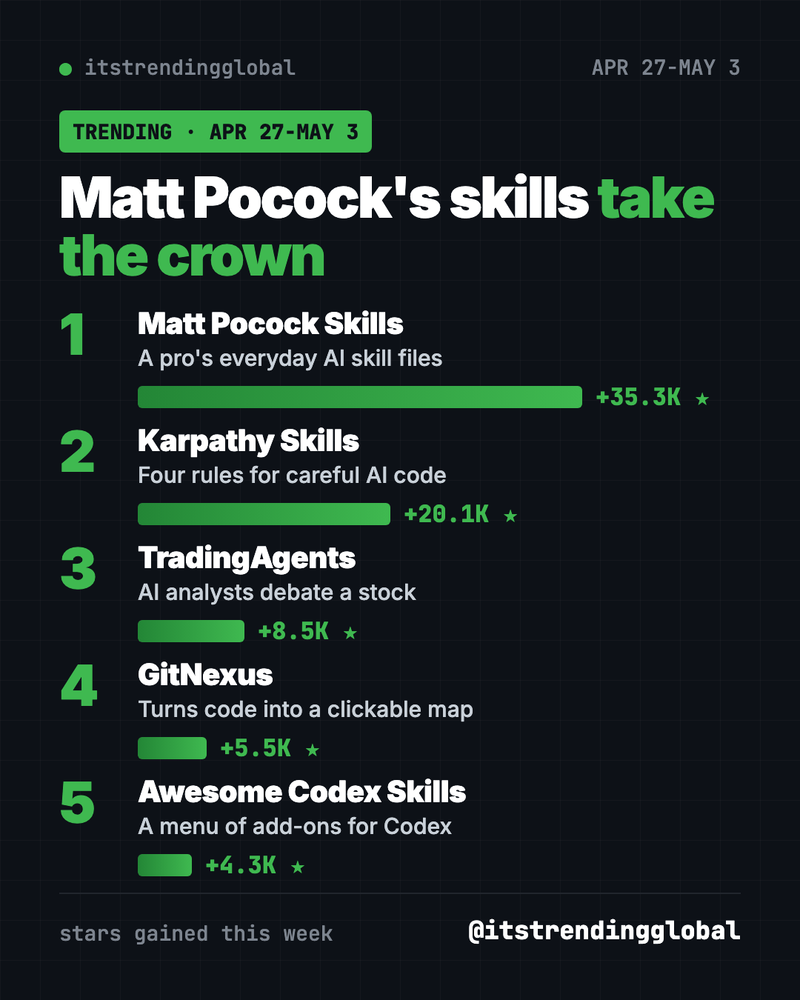
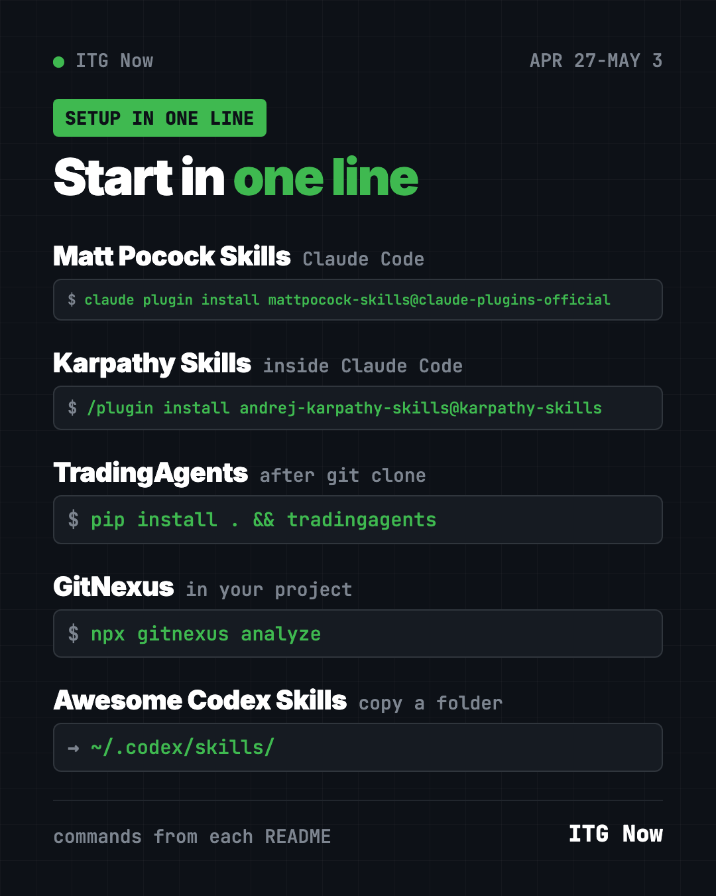

Home › Top lists › GitHub trending this week
Trending GitHub Repos April 27 2026: Skills Take Over
- Published 15 Oct 2026
- Updated 16 Oct 2026
- 6 min read
- By the ITG Now team
The trending GitHub repos April 27 2026 week crowned a new leader. Matt Pocock's skill files gained about 35,300 stars and knocked Karpathy Skills to second. A stock-research AI team, a code map and a list of Codex add-ons filled out the top five.
Two of the five are "skills," small instruction files for AI helpers. That theme ran through most of the spring.
Key takeaways
- Matt Pocock Skills jumped from fourth place to first in one week.
- Karpathy Skills stayed in the top two for the third week running.
- TradingAgents sets up AI "analysts" that debate a stock like a trading firm would. It is for research, not advice.
- GitNexus turns a codebase into a map you can explore in your browser.
- Awesome Codex Skills is a menu of ready-made add-ons for OpenAI's Codex.

Compare them fast
| Repo | What it does | Best for | Stars this week | License |
|---|---|---|---|---|
| Matt Pocock Skills | Everyday skills from a pro | Developers | +35.3K | MIT |
| Karpathy Skills | Four rules for careful AI code | Claude Code users | +20.1K | No license file listed |
| TradingAgents | AI team that researches a stock | Finance students, tinkerers | +8.5K | Apache-2.0 |
| GitNexus | Code turned into a knowledge map | Developers new to a project | +5.5K | PolyForm Noncommercial |
| Awesome Codex Skills | Curated list of Codex add-ons | Codex users | +4.3K | No license file listed |
Star gains cover April 27 to May 3, 2026. Totals were checked on GitHub on October 16, 2026.
1. Matt Pocock Skills: the new number one
Stars: +35.3K this week · about 293K total now
What it is: TypeScript teacher Matt Pocock shares the skills from his own setup. He pitches them as an alternative to big frameworks that "own the process." Each skill is small, works with any model, and is meant to be edited.
Who it's for: Developers who want good habits without giving up control.
Everyday use: Let your AI helper interview you about a new feature before it plans anything.
Install it: For Claude Code:
claude plugin install mattpocock-skills@claude-plugins-official
Or ask your AI helper:
Install mattpocock/skills from GitHub and walk me through one skill on a small task.
See Matt Pocock Skills on GitHub · Read our full guide
2. Karpathy Skills: still near the top
Stars: +20.1K this week · about 220K total now
What it is: A single rules file for Claude Code, built on Andrej Karpathy's observations about AI coding slip-ups. It tells the AI to ask when unsure, keep things simple and make only the changes you asked for.
Who it's for: Anyone who wants calmer, smaller AI edits.
Everyday use: Ask for one new button and get exactly one new button.
Install it: In Claude Code:
/plugin marketplace add forrestchang/andrej-karpathy-skills
/plugin install andrej-karpathy-skills@karpathy-skills
Or ask your AI helper:
Add the rules from github.com/multica-ai/andrej-karpathy-skills to my CLAUDE.md without deleting what is there.
See Karpathy Skills on GitHub · Read our full guide
3. TradingAgents: an AI research desk for one stock
Stars: +8.5K this week · about 111K total now
What it is: A free framework from Tauric Research. Several AI agents play roles found at a trading firm: analysts for news, fundamentals and market data, plus a trader and risk managers. They argue and write a report. The README says it is built for research and is not financial, investment or trading advice.
Who it's for: Finance students and tinkerers curious how AI agents work as a team.
Everyday use: Run it on a company you know and read how each "analyst" reasoned.
Install it: You need Python and an AI model key.
git clone https://github.com/TauricResearch/TradingAgents.git
cd TradingAgents
pip install .
tradingagents
Or ask your AI helper:
Install TradingAgents from github.com/TauricResearch/TradingAgents and run one demo report for learning only.
⚠️ Heads up: Treat its output as a classroom exercise. Do not trade real money on it. We are not licensed advisors either.
4. GitNexus: a map of any codebase
Stars: +5.5K this week · about 48K total now
What it is: GitNexus reads a codebase and builds a knowledge graph, a web of how every piece connects. AI helpers like Claude Code, Cursor and Codex can then check that map before editing, so they break less. A web version lets you chat with any repo in your browser.
Who it's for: Developers joining a big project, and anyone using AI helpers on one.
Everyday use: Ask "what breaks if I change the login page?" and see the chain of affected files.
Install it: From your project folder:
npx gitnexus analyze
npx gitnexus setup
Or ask your AI helper:
Index this project with GitNexus from github.com/abhigyanpatwari/GitNexus and connect it to my editor.
💡 Tip: GitNexus uses a noncommercial license. Personal and learning use is fine; check the license before using it at work.
5. Awesome Codex Skills: a menu of add-ons
Stars: +4.3K this week · about 17K total now
What it is: A curated list of skills for Codex, OpenAI's coding helper. Skills cover jobs like meeting notes, spreadsheet formulas and code reviews. The list now lives under composio-community on GitHub.
Who it's for: Codex users who want ready-made skills instead of writing their own.
Everyday use: Add the meeting-notes skill and ask Codex to turn a transcript into action items.
Install it: Clone the list, then copy a skill folder into your Codex skills folder:
git clone https://github.com/composio-community/awesome-codex-skills.git
cp -r awesome-codex-skills/meeting-notes-and-actions ~/.codex/skills/
Or ask your AI helper:
Browse github.com/composio-community/awesome-codex-skills and install the three skills that fit my work best.
See Awesome Codex Skills on GitHub

Which one should you try first?
- Claude Code users: Matt Pocock Skills or Karpathy Skills. Both install in seconds.
- Codex users: browse Awesome Codex Skills.
- Curious about finance and AI: TradingAgents, as a learning toy.
- Lost in a big codebase: GitNexus.
For the whole month, see the best GitHub repos of April 2026 and April 2026 AI news. The week before is April 20 to 26; next is May 4 to 10.
FAQ
What were the trending GitHub repos the week of April 27, 2026?
Matt Pocock Skills, Karpathy Skills, TradingAgents, GitNexus and Awesome Codex Skills.
What is a "skill" for an AI helper?
A short instruction file the AI follows for one kind of job, like planning a feature or reviewing code.
Can TradingAgents make me money?
It is not designed for that. Its README says it is for research and not financial advice.
Is GitNexus free?
Yes for personal and noncommercial use. Its PolyForm Noncommercial license limits business use.
Do Codex skills work in Claude Code?
They are written for Codex. Many ideas carry over, but setup differs, so check each skill's notes.
Keep reading

Trending GitHub Repos October 2026: The Top 5 So Far
The trending GitHub repos of October 2026 so far: a free Photoshop-style editor, an AI art studio, a big AI model for gaming PCs and more, explained.

Trending GitHub Repos This Week, Oct 5 2026: The Top 5
Trending GitHub repos this week Oct 5 2026: Matt Pocock's skills, the openGym workout tracker, e2e testing, HyperFrames video and claude-mem memory.

GitHub Trending September 28, 2026: Hindsight and Paperclip
GitHub trending September 28 2026: Hindsight, Paperclip, NVIDIA's OpenShell and a free 542-lesson AI course, with setup steps for each.